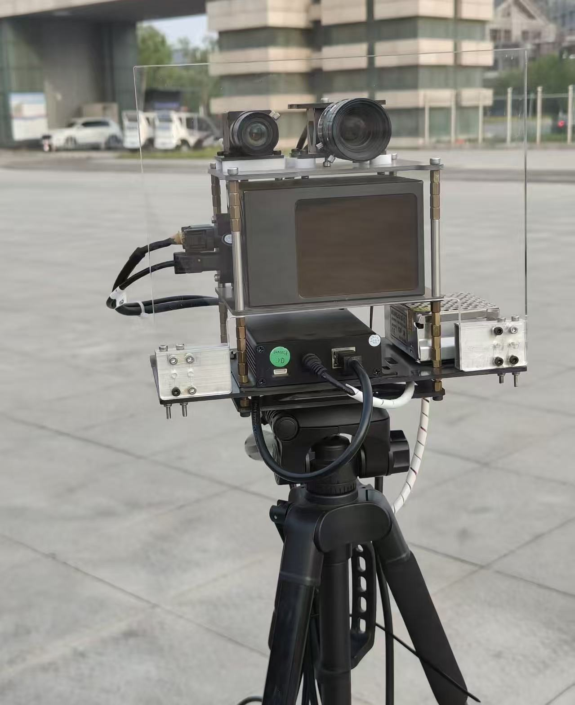
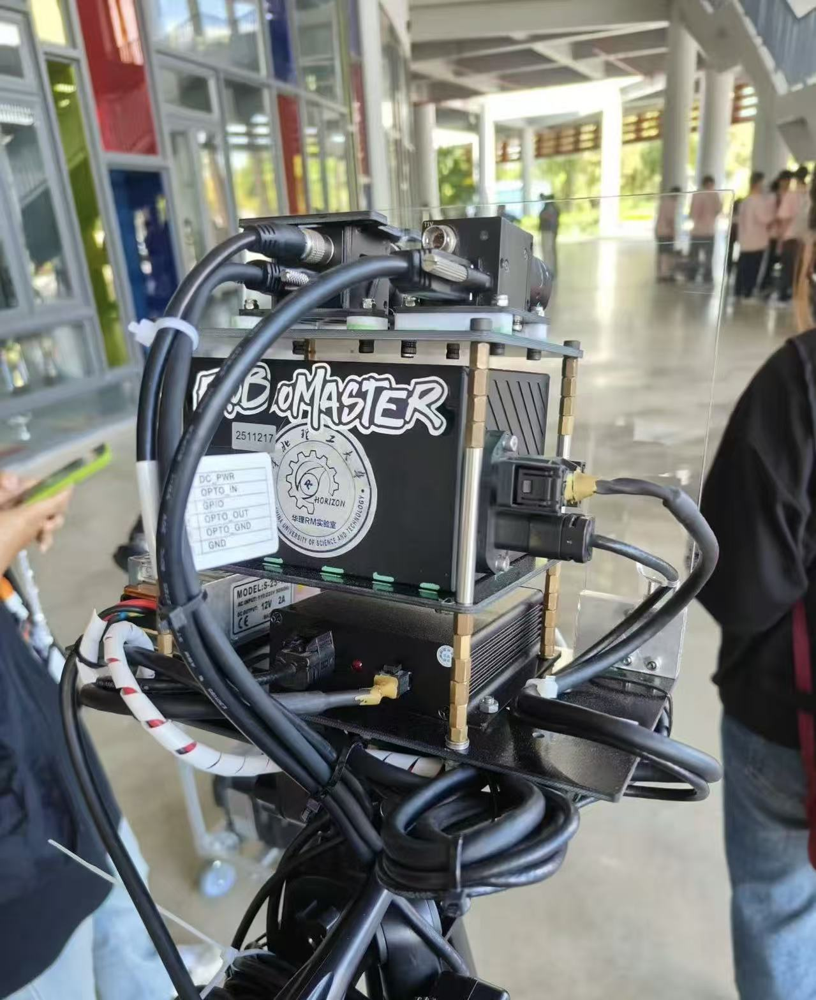
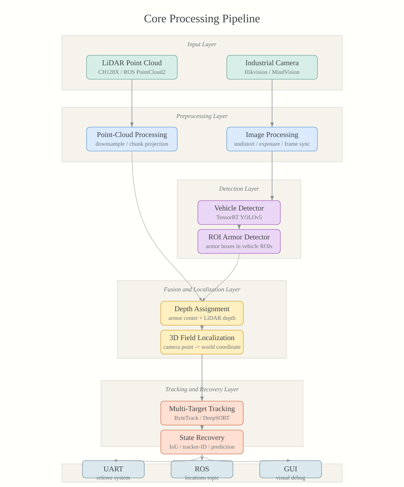
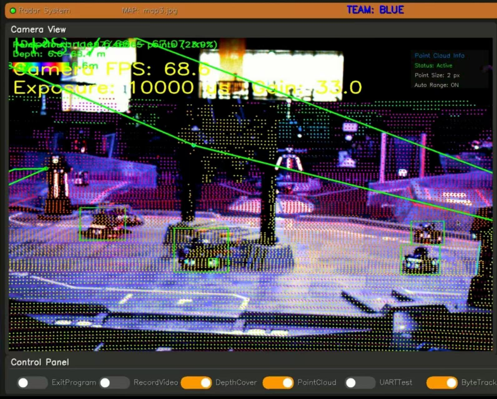
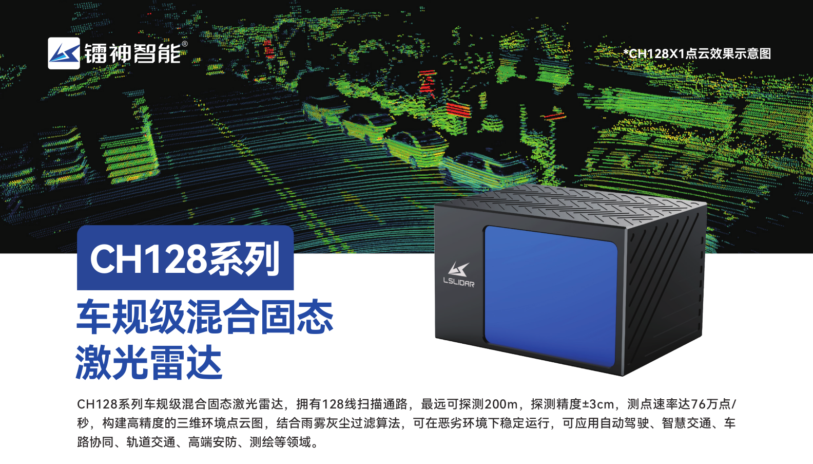
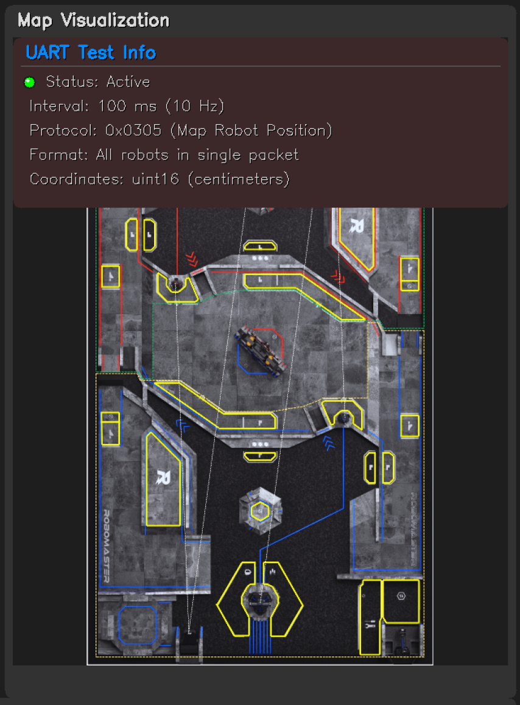
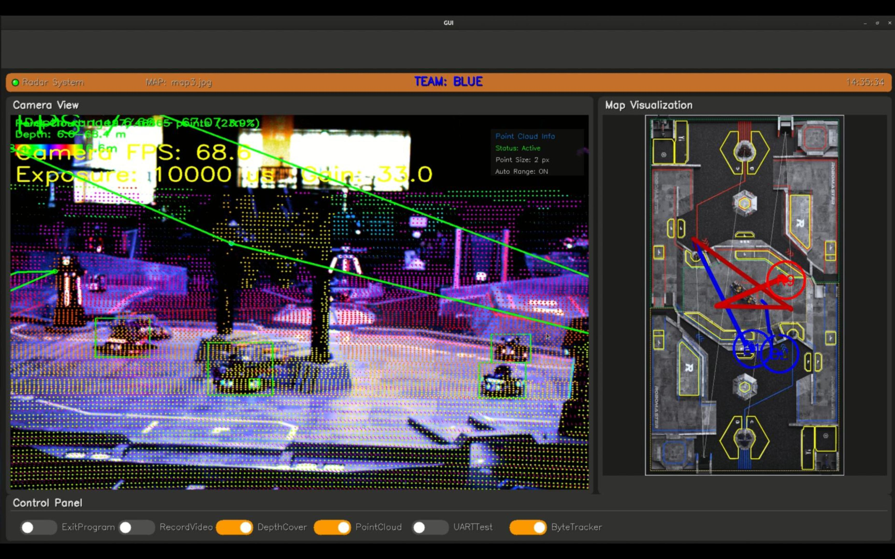

LiDAR Localization & Tracking System
A LiDAR-camera fusion system for robot detection, depth-aware localization, multi-target recovery, and referee-system communication in RoboMaster radar-station scenarios.

Overview
LiDAR Localization & Tracking System is a ROS / C++ RoboMaster radar-station project that fuses industrial-camera vision with LiDAR depth. It detects robot vehicles and armor plates, assigns LiDAR depth to image-space armor centers, reconstructs field coordinates, maintains target identity over time, and sends localization results into the RoboMaster referee-system communication loop.
The project is best understood as a complete radar-station pipeline rather than a single detection demo. Its core problem is keeping camera frames, LiDAR point clouds, calibration, target IDs, world coordinates, ROS outputs, GUI feedback, and UART messages consistent under real-time competition constraints.
I developed this implementation for the HORIZON RoboMaster 2025 radar group, and tested it around CH128X LiDAR input, Hikvision / MindVision industrial cameras, CUDA / TensorRT inference, and ROS Noetic deployment. MindVision camera demos reached roughly 60 FPS in the documented setup, while high-resolution Hikvision operation was closer to 10 FPS because of the much heavier image stream.


Core Technical Pipeline
The default perception path is a two-stage detector: vehicle detector -> ROI armor detector. The vehicle detector first finds candidate robot regions, then the armor detector runs inside each vehicle ROI and maps armor boxes back to the original image. This makes the armor search more focused and gives the localization module a semantically meaningful image point.
In parallel, incoming LiDAR frames are projected into the camera image to build an image-aligned depth map. A detected armor center is therefore not treated as a pure 2D detection: it becomes a 2D image measurement with LiDAR-provided depth, which can be lifted into 3D camera coordinates and transformed into the field frame.

LiDAR-to-Camera Depth Projection
The LiDAR callback converts each incoming PointCloud2
message into a PCL cloud and applies the configured
LiDAR-to-camera extrinsic matrix. Points behind the camera or outside
the image bounds are discarded. Valid points are projected through the
camera intrinsic matrix and written into an image-sized depth map.
When multiple LiDAR points fall onto the same pixel, the depth map keeps the nearest valid depth. This creates a practical bridge between sparse 3D LiDAR geometry and 2D armor detections: the detector only needs to provide an armor center, while the LiDAR projection supplies the corresponding metric depth.
The downstream localization step undistorts the detected armor center before combining it with the sampled LiDAR depth.
u = fxX / Z + cx, v = fyY / Z + cy
D(u, v) = min(D(u, v), Z) ECL maps LiDAR coordinates into the camera frame. The depth map stores camera-frame Z depth at projected image pixels.

Field Localization
Map calibration starts from an interactive four-point picking tool. The system loads known field landmarks from a JSON map file, lets the operator click their image positions, refines the selected corners, and tries multiple PnP solvers including P3P, AP3P, and EPNP. The solution with the lowest reprojection error is used as the camera to world transform.
For each detected armor plate, the image center is undistorted, combined with LiDAR depth, lifted into camera coordinates, and transformed into the world frame. The depth is not estimated from monocular vision; it is sampled from the LiDAR-projected depth map at the detected armor center.
pc = d [xn, yn, 1]T
pw = Twc pc Twc is obtained from the PnP-based field calibration and maps camera-frame coordinates into the field/world frame.
Dense Point-Cloud Handling
A major engineering focus was keeping dense LiDAR input usable inside the real-time radar-station loop. The project supports voxel-grid, random, and uniform downsampling, adaptive voxel adjustment, LiDAR health logging, and chunked projection for large point clouds.
The large-cloud path splits point clouds into chunks, computes local depth maps in parallel, and merges them by nearest valid depth. This is especially important for high-density sensors such as CH128X, where naive single-threaded projection can dominate the frame budget. The goal is to preserve enough near-object depth detail while preventing dense LiDAR frames from dominating the perception loop.
The processing path is density-aware: smaller clouds avoid unnecessary threading overhead, while large clouds are split across worker threads and merged from local depth maps. In practice, downsampling is useful for controlling runtime cost, but it must be used carefully because overly sparse clouds can make localized depth values jitter, especially along the Z axis.

Multi-Target Tracking and Recovery
Tracking is used as a localization-stability layer rather than only a visual overlay. ByteTrack maintains persistent target IDs across frames, while the mapping module can use tracker IDs and IoU-based association to recover robot targets when armor detections are briefly missing but the vehicle region is still visible.
ByteTrack is a good fit here because it uses geometric association and Kalman-style motion prediction without requiring an additional appearance feature network. Compared with a heavier DeepSORT-style path, this keeps the tracking layer lightweight while still reducing ID switches and preserving targets through short occlusions or weak detections.
The localization module also contains history-based position prediction and Z-axis jump correction. These recovery mechanisms are important because a radar-station output should remain stable even when one frame has weak armor confidence, imperfect depth assignment, or temporary target occlusion.
Referee-System Communication
The UART module connects the perception pipeline to the RoboMaster
referee system. It parses match state, robot HP, and related protocol
frames, and sends radar map position data through the
0x0305 command with CRC8 / CRC16 validation. The protocol
path was updated for the 2025 RoboMaster referee-system format.
The system also publishes localization results through ROS messages, allowing the same position estimates to be consumed by visualization, debugging tools, or other robot-side modules.

Visualization and Debugging
The GUI node subscribes to the fused camera view and localization messages, then displays the map, target trajectories, FPS, camera parameters, team state, and system switches. It can toggle recording, depth overlay, point-cloud visualization, UART testing, and ByteTrack through ROS parameters.
This tooling matters because radar-station failures are often cross-module failures: a wrong extrinsic matrix, a stale LiDAR frame, a missing depth value, a lost target ID, or a UART protocol issue can all look like a bad final localization result unless the intermediate state is visible.

Engineering Challenges
Several constraints shaped the design. High-density LiDAR input makes projection throughput a first-class problem; high-resolution industrial cameras trade image detail for lower frame rate; and the final localization quality depends strongly on camera calibration, LiDAR-camera extrinsics, model quality, and depth availability at the detected armor center.
The project therefore favors inspectable engineering over a black-box perception stack: configurable camera drivers, TensorRT engine generation, optional tracking backends, switchable point-cloud handling strategies, runtime GUI controls, logs, offline point-cloud testing, and UART test tools.
Why It Matters
This project is valuable because it exposes the full engineering burden behind a radar-station system. The difficult part is not only detecting robots, but keeping camera frames, LiDAR depth, map calibration, tracking IDs, world coordinates, GUI feedback, and match communication consistent under real-time constraints.
It also records a useful design lesson: perception systems for robotics are often limited by synchronization, calibration quality, dense sensor throughput, and operational tooling. A reliable system needs model inference, geometric projection, state recovery, logging, and human-facing debugging tools to work together.
A limitation is also clear from the project record: the pipeline is highly dependent on detection-model quality. Better training data and newer detector designs would likely matter as much as downstream engineering when moving the system to a new field or season.